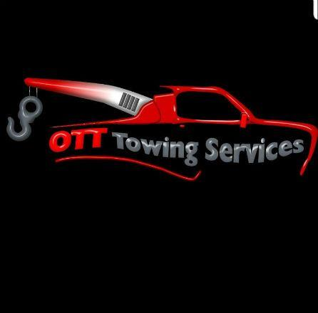

Give us a call.
Tell us your location, what’s happened and how many passengers are with you.
086 195 2598 ↗
086 195 2598
24/7 breakdown assistance in Dublin,
Meath & Kildare. One call. Expert help.
From a flat battery to vehicle recovery,
we’ll help you take the next step.

Car won’t start? Flat tyre? Wrong fuel? Tell us what’s happened and our experienced team will help.
Talk to our team ↗If your car or van can’t continue, our recovery team will help bring you and your vehicle to safety. Our trucks can transport up to seven passengers.
Get a recovery quote ↗Had a crash or damage to your vehicle? We’re here around the clock to help with vehicle recovery. Call us with your location and what’s happened.
About accident recovery ↗Tell us your location, what’s happened and how many passengers are with you.
086 195 2598 ↗Our team aims to reach you as quickly as possible. Ask for an arrival estimate when you call.
Our existing service guidance aims for arrival in under 30 minutes. Timing depends on your location, traffic and availability; confirm the estimate with our team.
Tell our expert team exactly what went wrong. We’ll help get your vehicle moving or arrange recovery.
Breakdown assistance across Dublin and the surrounding counties, with recovery available throughout Ireland.
Check availability in your area ↗24/7 car and van breakdown assistance across Dublin. Call with your exact location for an arrival estimate.
Roadside assistance and recovery across Meath. Tell us where you are and what help you need.
Car and van breakdown assistance across Kildare, day or night.
We also cover Wicklow and are happy to travel throughout Ireland. Call to discuss your recovery and get a quote.
Nice and very helpful man that went beyond simple towing!
Great service, highly recommend.
Great offer of service and prices.
Review excerpts from our existing breakdown assistance page.
Yes. Our breakdown and recovery service operates 24 hours a day, seven days a week.
Our recovery trucks can carry up to seven passengers. Let us know your passenger count when you call so we can arrange the right vehicle.
Call 086 195 2598 for a quote based on your location, vehicle and the assistance needed.
Yes. We provide car recovery and van breakdown services. Tell our team your vehicle details when you call.
Breakdown assistance. Recovery. Reassurance.